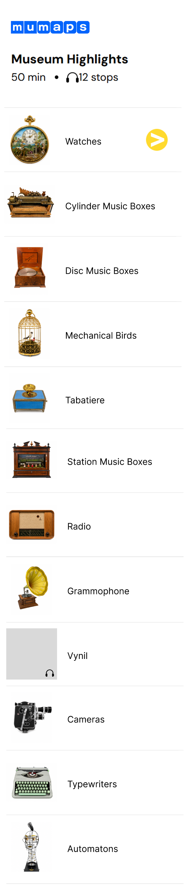

Your audio guide
Let’s get started!
Choose the language of your preference
Choose your tour:
What are you curious about today?
Museum Highlights

Stop 1: Watches

Stop 1
Watches
Ste-Croix and the art of precision
Welcome to Ste-Croix! Can you hear the ticking?
Let’s meet the humble pocket watch, the smallest objects on our display.
Our pocket watches are as small as they are complex. Creating a functional pocket watch requires controlling dozens of tiny moving parts with extraordinary precision. Misplace a single piece and you’ll never know the correct time again!
Precision metalwork didn't appear overnight. Long before Sainte-Croix became known for music boxes and automata, its people were already mastering tiny mechanical parts. Remote and high in the Jura mountains, with long winters and little other work, the town turned time, patience, and skilled hands into something valuable. Young apprentices traveled to places like Geneva to learn the craft, then brought their skills home. At first, local workshops simply supplied delicate components to larger watchmaking centers, but the knowledge stayed and spread from workshop to workshop, generation to generation.
Once a community masters movement at that scale, a watch no longer has to just tell time. In 1865, Charles Reuge opened a workshop in Sainte-Croix making musical pocket watches, combining timekeeping precision with a miniature musical mechanism. The same skills that made a watch tick could also make it sing.
By 1878, Sainte-Croix had 23 watch manufacturers producing nearly 23,000 watches a year and employing over 1,000 people, hundreds of hands working daily with screws, springs, and wheels small enough to vanish between their fingers.
Let’s visit Stop 2 to explore further!
Enlarged object image